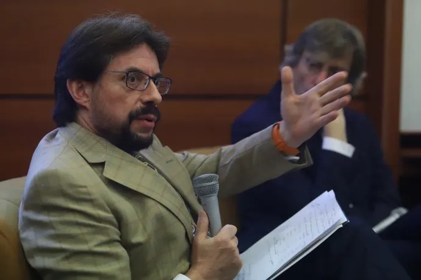
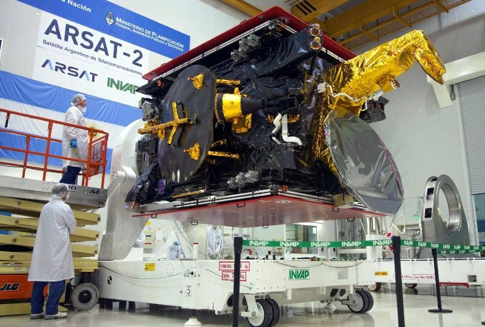
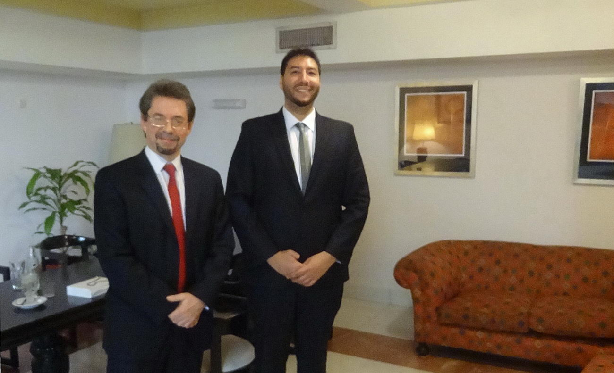

Henoch Aguiar
Clipping
Bienal de Periodismo y Comunicación: de la evolución de los medios a la inteligencia artificial Del 5 al 6 de junio habrá debates, talleres y conferencias en la Facultad de Comunicación de la UNC. Cómo inscribirse en la IV Bienal de Periodismo y Comunicación. La Voz del Interior, 3 de junio de 2023.
Leer más >>>
Argencon organizó en Mendoza un foro nacional sobre educación y talento. La economía del conocimiento es una revolución federal por la naturaleza de la red que la atraviesa" Canal-ar, 28 de abril de 2023.
Leer más >>>
Por qué se siguen cortando las comunicaciones móviles por celular «Argentina es el primer país del mundo en transformar la telefonía móvil en fija; si te mueves, suenas (…) La gente que escucha te dice que te quedes quieto”. Son palabras del 2013 de Henoch Aguiar, experto en comunicaciones y exjefe de esa cartera de gobierno. Titulares.ar, 29 de abril de 2022.
Leer más >>>
Fopea refuerza su red legal de abogados Se trata de un equipo de trabajo que busca fortalecer la defensa de la libertad de expresión en Argentina. Además, se está elaborando una Guía de Herramientas legales para defender a periodistas. FOPEA, 1 de agosto de 2022.
Leer más >>>
Puja por presencialidad en Senado y debate sobre internet y telefonía Legisladores de Juntos por el Cambio se retiraron de la reunión de la comisión de Medios, donde se busca discutir por ley -tras DNU en Justicia de Alberto Fernández- sobre telecomunicaciones. Una situación similar ocurre en Diputados. Oficialistas cambiaron de postura en las últimas horas. AMBITO FINANCIERO, 30 de Septiembre de 2021. Leer más >>>
Entrevista a Henoch Aguiar, exvicepresidente de Arsat y exsecretario de Comunicaciones de la Nación.
Radio SPLENDID, Sábado, 05 Septiembre 2020 10:43
Radio SPLENDID, Sábado, 05 Septiembre 2020 10:43
¿Quién pone las reglas de la comunicación?
Por Mauro Berchi, TN, 7 de Noviembre de 2020
Leer más >>>
Por Mauro Berchi, TN, 7 de Noviembre de 2020
Leer más >>>
Decreto. Qué puede pasar con los servicios de teléfono, cable e internet
Por María Julieta Rumi, La Nación, 24 de Agosto de 2020
Leer más >>>
Por María Julieta Rumi, La Nación, 24 de Agosto de 2020
Leer más >>>
La inteligencia artificial, un motor para mejorar la democracia.En la charla "Democracia, políticas públicas e inteligencia artificial" tres expertos trataron las principales implicancias del tema, los desafíos, las posibilidades a futuro y la actualidad a nivel local y mundial.AMBITO FINANCIERO, 27 de noviembre de 2019.

Leer más >>>
Treinta años de telefonía celular en la Argentina: cómo fue el lanzamiento del primer Movicom. Licitado por Rodolfo Terragno y Raúl Alfonsín, la primera llamada fue entre Carlos Menem y María Julia Alsogaray el 1° de noviembre de 1989. Al principio el servicio era muy caro y tenerlo era símbolo de status. Por Alejandro Alfie, CLARIN, 29 de Octubre 2019.
Leer más >>>
El gobernador Zamora recibió al director del Arsat, Henoch Aguiar, quien participa del "Nodo Sinergia". El gobernador de Santiago del Estero, Gerardo Zamora, recibió al director de la empresa estatal de telecomunicaciones Arsat, Henoch Aguiar, quien participa del "Nodo Sinergia" que se desarrolla en la provincia. EL LIBERAL, 28 de Julio de 2018.
Leer más >>>
Encuentro con funcionarios de ARSAT. El gobernador de Santiago del Estero, Gerardo Zamora, recibió al director de la empresa estatal de telecomunicaciones Arsat, Henoch Aguiar, quien participa del "Nodo Sinergia" que se desarrolla en la provincia. EL LIBERAL, 28 de Julio de 2018.
Leer más >>>
Encuentro con funcionarios de ARSAT. La gobernadora Rosana Bertone recibió a funcionarios de ARSAT para tratar diferentes iniciativas en vista de los avances de la obra de cruce de la red de fibra óptica a través del Estrecho de Magallanes. EL DIARIO DEL FIN DEL MUNDO, 30 de Noviembre de 2017.
Leer más >>>
Bariloche debate sobre ciudades inteligentes. La ciudad es sede de un encuentro nacional que vincula a los gobiernos con la tecnología. Weretilneck reconoció que aún no se incorporaron todos los adelantos disponibles.
RIO NEGRO, 31 de agosto de 2017.
Leer más >>>
En 8 meses finalizarían el tendido de fibra óptica sobre la ruta 14, cubriendo a más de 40 localidades y beneficiando a cerca de 600 mil habitantes. Henoch Aguiar, vicepresidente de ARSAT contó en Radio Libertad los avances de los trabajos para extender la fibra óptica en Misiones. Adelantó que en 8 meses estará finalizado el trabajo que permitirá iluminar 828 kilómetros de la red, cubriendo a más de 40 localidades y beneficiando cerca de 600 mil habitantes.
RADIO LIBERTAD y MISIONES ONLINE, 7 de Julio de 2017.

Leer más >>>
Instalarán mil antenas de TDA Satelital en Chaco. El Directorio de la empresa ECOM Chaco S.A. se reunió con el vicepresidente de ARSAT, Henoch Aguiar, para coordinar acciones referidas al mantenimiento de la fibra óptica, el incremento del ancho de banda, y la instalación de antenas satelitales receptoras de Televisión Digital Abierta (TDA) en la provincia del Chaco
LATAM Stelital, 26 de febrero de 2016.
Leer más >>>Crean comisión para redactar una Ley de ComunicacionesEl Gobierno busca reemplazar las leyes de medios audiovisuales y de telecomunicaciones.CLARIN, 9 de marzo de 2016.
Leer más >>>
El Gobierno designó a los nuevos directores de ARSAT El flamante presidente de la empresa satelital es el dirigente cordobés Rodrigo de Loredo; Henoch Aguiar, ex secretario de Comunicaciones de De la Rúa, fue designado vicepresidente. EL CRONISTA, 22 de diciembre de 2015.
Leer más >>>
La firma digital puntana como objeto de estudio en la UBA Autoridades del Instituto de Firma Digital San Luis (IFDSL) disertaron el pasado jueves en la Universidad de Buenos Aires (UBA) acerca de los alcances y logros de la implementación de la herramienta tecnológica en la provincia. La misma se brindó a un grupo de alumnos de la cátedra de Legislación Comparada, de 5º año de la carrera Comunicación Social de la UBA. ANSL, 9 de Junio de 2015.

Leer más >>>
“A esta ley le reprocharía que le da poderes omnímodos al estado” Henoch Aguiar - Ex Secretario de Comunicaciones. INFOBAE, 30 de Octubre de 2014.
“Argentina Digital” Henoch Aguiar sobre el proyecto de ley de telecomunicaciones "Argentina Digital". Comisión de sistemas, medios de comunicación y libertad de expresión del Senado de la Nación. 11 de noviembre de 2014.
La ley de medios atrasa Si el tiempo es la medida del movimiento, como decían los clásicos, parece haber pasado una década desde la sanción de la ley de medios, en 2009. Ya entonces la ley desconocía los efectos de la revolución digital. Parecía redactada como a principios de los noventa, antes de Internet, de la convergencia digital entre telecomunicaciones y radiodifusión. Hoy, el envejecimiento de la ley es patente y muy menguante su aplicabilidad. LA NACION, 22 de julio de 2013.
Leer más >>>
Sólo el 35% de las antenas del país tiene 3GEl ex secretario de Comunicaciones atribuyó las fallas del servicio de telefonía celular a la ausencia de inversión, controles y competencia en el mercadoLA NACION, 22 de julio de 2013.
Leer más >>>
Por qué se siguen cortando las comunicaciones móviles por celular«Argentina es el primer país del mundo en transformar la telefonía móvil en fija; si te mueves, suenas (…) La gente que escucha te dice que te quedes quieto”. Son palabras del 2013 de Henoch Aguiar, experto en comunicaciones y exjefe de esa cartera de gobierno.LA NACION, 22 de julio de 2013.
Leer más >>>
La ley de medios en Argentina, ¿censura o regulación? CNN en Español, 7 de diciembre de 2012
Leer más >>>">
En el desorden no puede haber democratización La NACION, 13 de Septiembre de 2012
Leer más >>>">
La ley de medios se aplica sólo como herramienta política de corto plazo Especialista en comunicación y profesor de legislación comparada de la UBA, Aguiar cuestiona la utilización política de la norma, sancionada hace dos años, y reclama una autoridad de aplicación independiente del poder de turno. Señales, 16 de octubre de 2011.
Leer más >>>
«La ley de medios tiene dos años pero todavía no camina, apenas gatea». Por José Crettaz.ConverCom, 3 de octubre de 2011.
Leer más >>>
El costo del SMS aumenta entre el 19 y el 56 por ciento. Los mensajitos costarán de 39 a 43 centavos.CLARIN, 20 de noviembre de 2009.
Leer más >>>
El especialista en telecomunicaciones Henoch Aguiar dice que el país debe ingresar en la era digital. La Argentina exporta US$ 300 millones por año en servicios de software, muy por debajo de otros países. LA NACION, 6 de enero de 2008.
Leer más >>>
La entrada de Telefónica en Telecom violará la ley argentina. Lo aseguró el ex secretario de Comunicaciones Henoch Aguiar. Remarcó que se afectaría el régimen legal fijado cuando se privatizó Entel. iPROFESIONAL, 24 de agosto de 2007.
Leer más >>>
Con 3 números se podrá elegir operador de larga distancia. Será a partir de enero Después del 0 se marcará el prefijo de la compañía elegida y luego el resto del número Seis compañías prestarán el servicio para público masivo Según el Gobierno, bajarán las tarifas. CLARIN, 3 de diciembre de 2000.
Leer más >>>
Una nueva ley de radiodifusión. El Gobierno está preparando un proyecto para elevar al Congreso, del que participan todas las entidades vinculadas al sector. La nueva norma anulará la que rige desde los tiempos de la dictadura militar. CLARIN, 4 de marzo de 2000.
Leer más >>>
Henoch Aguiar defiende la apertura telefónica tras críticas de Gallo. El secretario de Comunicaciones rechaza la calificación de elitista para la desregulación telefónica, aunque admite que los primeros beneficiados serán los sectores de mayor poder económico. Se resiste a medirla sólo por el efecto tarifas en un primer momento. Un día después de la entrevista de Página/12 a Nicolás Gallo, sale a defenderse pero sin entrar en polémica. PAGINA 12, 2000.
Leer más >>>